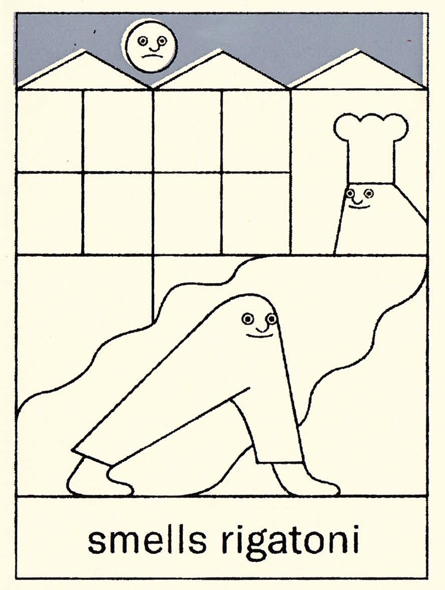

Roasted broccoli
Peaches
Hummus
Chickpeas
Potatoes
Burrito
The Messy Heads is one of my favourite websites to go on. It is an online blog that shares unique artwork and thoughts. I go onto it to get inspired. It is a very calming site, no outside advertisements or pressure to think or feel in a certain way. I have also discovered new artists through them.

- Switzerland
- Lucerne
- Montreux
- Brig
- Germany
- Aurich
- Forst
- Frechen
- New Zealand
- Otiria
- Bunnythorpe
- Norfolk
- France
- Goult
- Eze
- Giverny
- Greenland
- Paamiut
- Saarloq
- Ikerasaarsuk
right
now I am
feeling rather
ill. in general I am
happy to be back in school
and learning but currently I
feel like I could pass out
at any moment. This
came upon me
rather
suddenly
and I hope it leaves the same.
.-""""-. .-""""-.
/ \ / \
/_ _\ /_ _\
// \ / \\ // \ / \\
|\__\ /__/| |\__\ /__/|
\ || / \ || /
\ / \ /
\ __ / \ __ /
'.__.' '.__.'
| | | |
| | | |
- The Beatles
- Dr Dog
- Paul Baribeau
- The Growlers
- Hall and Oates
- Summer Salt
Inline means the item has the same height of the line height. In example, the span tag is considered inline. While inline block can have more width height, but still fit into the same element. Block is quite similar but it adds a linebreak before and after the element. In example a div is considered a block. (This is for default items, which can be changed by saying display: inline, inline-block, or block)